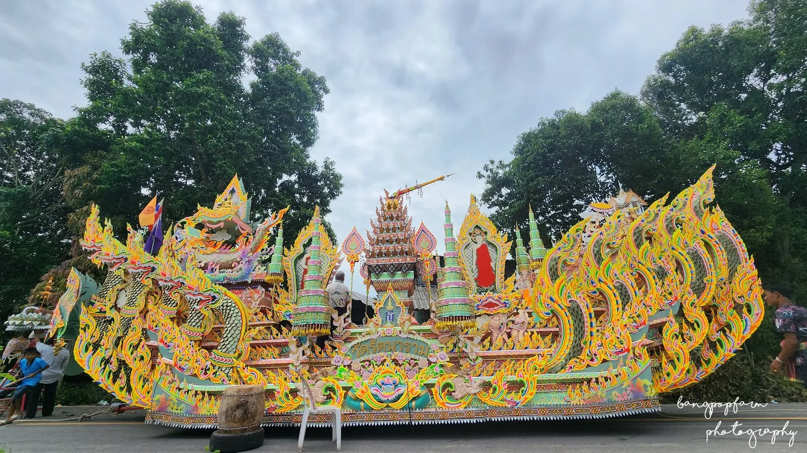
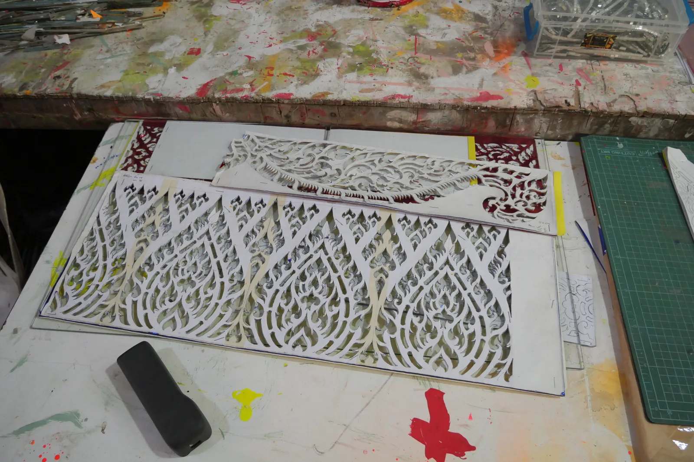

ภาพบันทึก · อำเภอปากพะยูน
เรือพระ
เล่าเรื่อง
ชมเรือพระจากภาพบันทึกจริง ดูลวดลายระยะใกล้ และตามไปดูขั้นตอนงานกระดาษ
เริ่มจากเรือหนึ่งลำ

01 / งานกระดาษ
ลายที่ช่างทำ
ทีละช่องไฟ
ภาพบันทึกชิ้นกระดาษฉลุบนโต๊ะทำงานช่วยให้เห็นเส้น รอยตัด และจังหวะที่เกิดซ้ำ ก่อนนำชิ้นงานไปประกอบบนเรือพระ
ลายเส้นด้านข้างเป็นภาพร่างเชิงตกแต่ง · ต้องตรวจรูปแบบกับช่างก่อนใช้จริง
แนวทาง: เส้นคลื่น + ลายฉลุ + ภาพถ่ายจริงใช้เป็นจังหวะพักสายตา ไม่วางลายใต้ข้อความสำคัญ